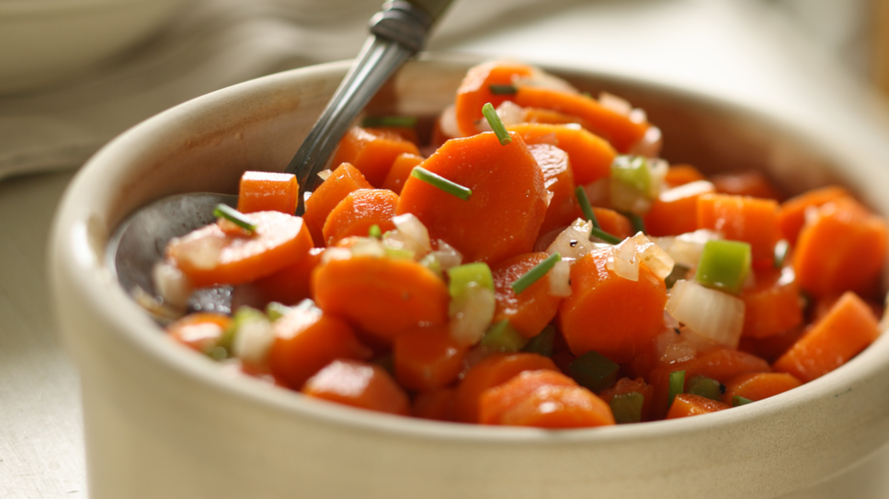
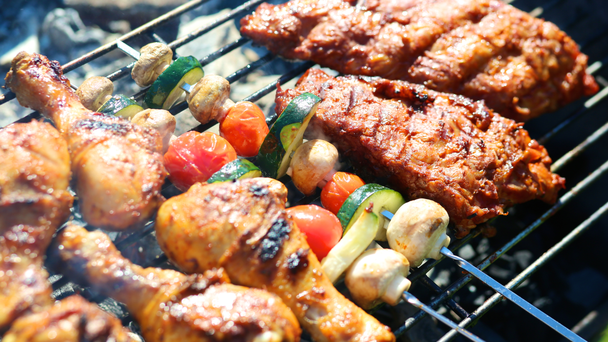
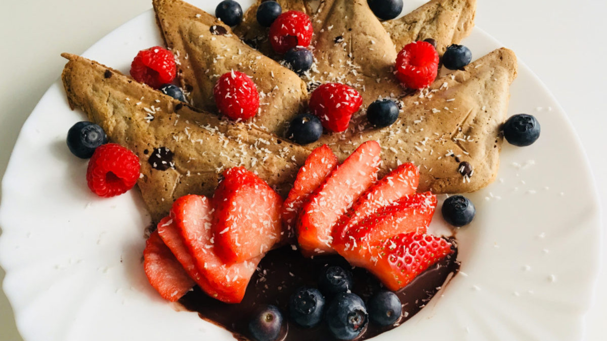

Table 3066 is a fictional restaurant, serving as the final project of a FSU web development class,
CGS-3066: Web Programming and Design.
Table 3066 consists of 3 pages, each containing an interactive navigation menu bar, an image slideshow, and more features.
The Hours page displays whether the restaurant is open or closed based on your device's time.
The Menu page displays our menu, which consists of a mySQL table of food items, prices, and more.
This project is meant to demonstrate our mastery over HTML, CSS, javascript, PHP, and mySQL.
Thank you for choosing Table 3066. Enjoy.



